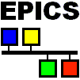

|
 |
CSS means Control System Studio. It is a software, which is intended to be used in environments, where an operator has to visualize data with synoptic displays. It provides configurable synoptic displays for various data-sources.
In 2005, Mr. Matthias Clausen from the DESY institute (Hamburg) had the idea to build a new controlling software system, based on the existing EPICS-Software. The EPICS-software (current state 02/2006) is a MUD-System (Multi-User-Developed System) with tons of synoptic displays in different graphical designs. Also, the navigation and the Look-and-Feel of the existing system is different in each extension.
The new Software shall provide
We decided to implement the new CSS Software with Eclipse. The Plugin-Architecture makes it relatively easy to extend the system with own features and functions. Due to the fact, that not all developers are firm in developing plugins for eclipse, we will provide a lot of wizards, that will help them to develop own plugins, without the knowledge of administrative tasks.